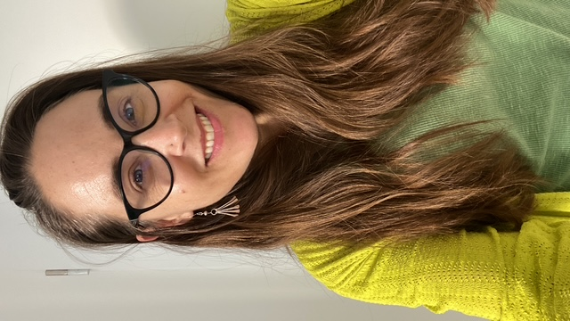

Decidir bajo incertidumbre profunda
Modelación exploratoria, escenarios, análisis de robustez y apoyo espacial a decisiones para explorar opciones y consecuencias.
Investigo y acompaño procesos para comprender sistemas complejos, tomar decisiones en contextos de incertidumbre y abrir caminos hacia futuros sostenibles.

Combino herramientas analíticas, espaciales y participativas para abordar desafíos complejos de sostenibilidad y apoyar decisiones informadas en contextos cambiantes.
Modelación exploratoria, escenarios, análisis de robustez y apoyo espacial a decisiones para explorar opciones y consecuencias.
Dinámica de sistemas, umbrales, resiliencia, servicios ecosistémicos y trayectorias de transformación hacia la sostenibilidad.
Evaluación de capacidades institucionales, indicadores, monitoreo, aprendizaje y gobernanza colaborativa.
Los problemas complejos no tienen soluciones simples. Necesitamos integrar perspectivas, explorar futuros posibles y aprender mientras actuamos.
Colaboro con equipos académicos, instituciones públicas y actores sociales en proyectos que requieren conectar evidencia, capacidades y acción.
Estrategias robustas, análisis de incertidumbre y herramientas de apoyo a la planeación de la adaptación.
Espacios de colaboración que articulan investigación, instituciones y sociedad para coproducir soluciones.
Modelos y herramientas geoespaciales para explorar dinámicas, riesgos, umbrales y futuros alternativos.
Marcos de evaluación, indicadores y procesos de aprendizaje para fortalecer la acción colectiva y adaptativa.
Construir puentes entre conocimiento, instituciones y sociedad es parte esencial de mi trabajo.
Soy investigadora en ciencias de la sostenibilidad. Mi trayectoria combina investigación inter y transdisciplinaria, liderazgo académico e institucional, colaboración nacional e internacional y vinculación multiactor para abordar problemas complejos de sostenibilidad y transformación socioecológica.
Actualmente desarrollo mi labor en el Laboratorio Nacional de Ciencias de la Sostenibilidad (LANCIS), del Instituto de Ecología de la Universidad Nacional Autónoma de México (UNAM), donde impulso la integración de conocimiento científico y procesos colaborativos para la toma de decisiones.
Abierta a colaboraciones de investigación, intercambio académico, conferencias y proyectos de asesoría estratégica.